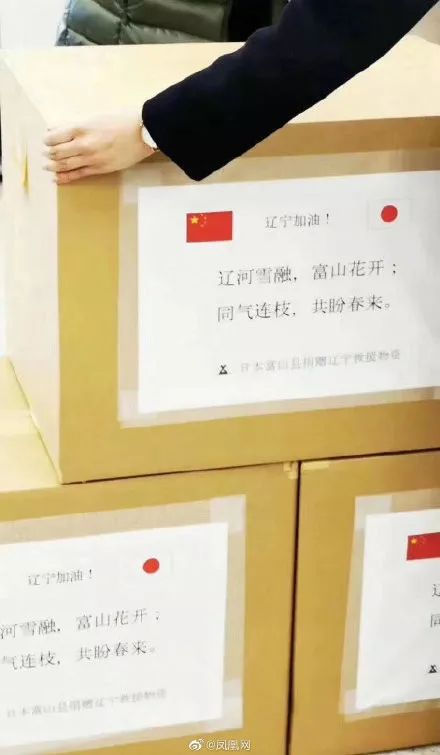

十件事，带你了解日本红十字会如何运作 | 未来预想图
原文链接 备份链接 近年来，大型自然灾害给日本带来重大影响，日本红十字会也在不断摸索、积累经验，以建立适应需求的运营管理模式。红十字会也需要“专业化”。 △ 日本红十字会的宣传海报，其推广口号为“拯救人类的，仍是人类”。图片来源 | 日本 …
澎湃新闻记者 高丹
环球网
最近，日本送来的抗疫物资上频频引经据典——有取自日本国长屋王偈子的“山川异域，风月同天”，有取自《诗经·秦风·无衣》的“岂曰无衣，与子同裳”，最近的一批物资上的文字则引用了唐代诗人王昌龄《送柴侍御》中的一句“青山一道同雲雨，明月何曾是两鄕”，甚至还化用《千字文》中的“同气连枝”写作了一首小诗——“辽河雪融，富山花开；同气连枝，共盼春来。”
*日本援助武汉*
*↓*
山川异域，风月同天
首都师范大学文学院教授、中国古代文学博士生导师邓小军在接受澎湃新闻的采访时谈及：由鉴真称道的日本国长屋王造千袈裟，来施中华名德、众僧，其袈裟缘上绣着四句偈“山川异域，风月同天。寄诸佛子，共结来缘”，可见长屋王此偈对于鉴真起心发愿东渡日本弘法，起了甚深的感动、莫大的作用。偈，就是诗，佛教的诗。“山川异域，风月同天”，诗言日本、中国，虽然山川国土，是不同的国家，可是清风明月，我们两国人民同戴一天。下文“寄诸佛子，共结来缘”，诗言寄语中国各位佛子，共同缔结未来的美好因缘。
“现在，当中国人民遭受新型冠状病毒肺炎瘟疫之害，日本送来了珍贵的医疗物资，在包装标签下缘书写着：‘山川异域 风月同天’八个汉字，不仅凝聚着自长屋王、鉴真以来中日两国人民的千年情谊，而且以歇后语修辞法，表达了寄诸佛子，共结来缘——寄语中国人民，共结来缘，也就是日本人民希望与中国人民友好下去的当下的美好愿望。”邓小军教授谈及。
本文图片均来自微博
日本援助湖北
↓
岂曰无衣，与子同裳
这句来自三千多年前的古话浅白且铿锵。“岂曰无衣，与子同袍”来自于《诗经》中的《国风·秦风·无衣》一篇。
全诗如下：岂曰无衣？与子同袍。王于兴师，修我戈矛，与子同仇！岂曰无衣？与子同泽。王于兴师，修我矛戟，与子偕作！岂曰无衣？与子同裳。王于兴师，修我甲兵，与子偕行。
我们今天引用该诗时赋予它“同仇敌忾，鼓舞士气”的意义。
日本援助大连
↓
青山一道同雲雨，明月何曾是两鄕
这句诗出自王昌龄的《送柴侍御》，这首诗是这样写的：“沅水通波接武冈，送君不觉有离伤。青山一道同云雨，明月何曾是两乡。”诗中蕴涵的正是人分两地、情同一心的深情厚谊。

日本援助辽宁
↓
*辽河雪融，富山花开；同气连枝，共盼春来*
10日，日本富山县向辽宁省捐赠了1万枚口罩，而装满口罩的箱子上则印着：“辽河雪融，富山花开;同气连枝，共盼春来。”据悉，这首诗引用了南朝梁·周兴嗣的《千字文》：“孔怀兄弟，同气连枝。交友投分，切磨箴规。” 诗中，“同气连枝”比喻同胞的兄弟姐妹。
日本《朝日新闻》也表示，诗句有中日双方一同期盼春天的到来之意。富山县综合政策局长藏堀祐一说：“我知道目前当地对口罩的需求是迫在眉睫的，辽宁省的各位正在面临着困难，我们将给予支持。”

日本这波援助物资顺带诗词的做法
受到不少网友的称赞
无头船长： 可以 可以 语文学的比我好
且待我吃根辣条：文宣不错，事干的也不错，谢谢啦
Zodiacgl ： 诗歌真的可以给人力量
我是咸蛋君：体会到了久违的文化温情……
那天下午我出去了：有灵魂的文字，更配得上有爱心的物资
晨宇微光：在用词用语上，优雅了不止一个层级。
拢龙和赤司的顾北小宝贝：感谢友善 今天亦是明天的历史 我们不忘过去 但也展眼未来
月竹白糖：“海内存知己，天涯若比邻”希望我们也能以古诗词回应他们的帮助，真的感谢
而在这些取自中国古典文学中的、意蕴深厚情感丰沛的诗句的对比之下，我们一次次重复、喊成口号的“武汉加油”倒显得有些贫瘠了。
当国家危难之际，或许不该文质彬彬地抒情，而值危急存亡之关头，如果没有“我自横刀向天笑，去留肝胆两昆仑”、没有“寄意寒星荃不察，我以我血荐轩辕”，许多人的故事该藉何传之久远，又会少多少壮烈。
如一位学者所说，这些诗“火得不是时候，却也正是时候”，这或许正是一个好的节点让我们思考，明明是我们自己的文化怎么在别人侃侃而谈时我们却词穷了。
戳这里进入
“全国新型冠状病毒感染病例实时地图”↓↓↓

本期编辑 邢潭
推荐阅读


原文链接 备份链接 近年来，大型自然灾害给日本带来重大影响，日本红十字会也在不断摸索、积累经验，以建立适应需求的运营管理模式。红十字会也需要“专业化”。 △ 日本红十字会的宣传海报，其推广口号为“拯救人类的，仍是人类”。图片来源 | 日本 …
原文链接 备份链接 新冠肺炎疫情持续蔓延，在医疗物资紧缺情况下，援助一线，成了场生死攸关的接力赛。封城之际，困守武汉的辛迪，将募捐物资的接力棒，交到了在日本的朋友们手中。 本文为真故联合万能编辑部（ID：new-lens）共同推出。 故 …
原文链接 备份链接 关注并星标消费新声 不错过泛消费任何最新动态 尤其在近十年，尽管国际形势时有起落，但两国的经济和民间交流正在不可逆地粘连到一起，相似的传统文化背景让我们之间形成对照，成为几乎不可能被斩断的近邻。 作者 | …
原文链接 备份链接 28.01.2020本文字数：2613，阅读时长大约4.5分钟 导读：今日武汉市文化和旅游局也表示，目前尚有4096名武汉游客在境外。 作者 | 第一财经 陈姗姗 权小星 26日晚，湖北省人民政府新闻办公室就新型冠状 …
原文链接 备份链接 作者 | 李伟 出品 | 棱镜·腾讯小满工作室 欢迎下载腾讯新闻APP，阅读更多优质资讯 1月26日，来自四川航空方面的消息称，装载有日本民间捐助的100万只防疫口罩的3U8086“东京-成都”川航航班已抵达成都双流国 …